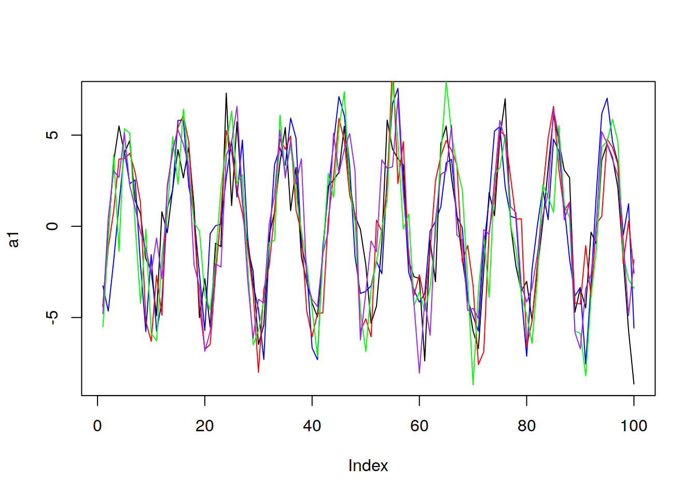
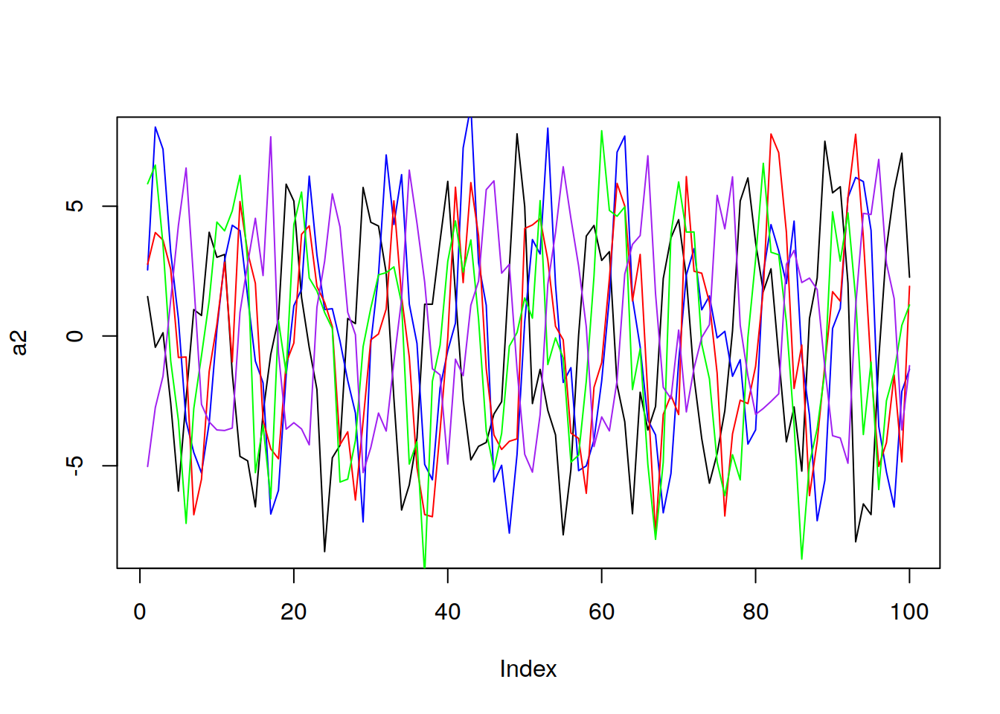

Unit 2 A Brief Discussion of Stationarity
In order for a time series to be considered stationary, it must satisfy three conditions:
Constant Mean with Time
Constant Variance with Time
Constant Autocorellation with Time
2.1 Condition One: Constant Mean
Mean is constant with time. That is \(E[X_t] = \mu\). Note the lack of a little tiny t in mu! It is indepoent of tine! That is stationarity condition number 1!
Important result: If we assume constant mean, we can use all of the data to estimate the mean
Here we can see after 5 realizations that the mean is clearly not constant with time
library(tswge)
a1 = gen.sigplusnoise.wge(100, coef = c(5, 0), freq = c(0.1, 0), psi = c(3,
0), vara = 3, plot = F)
b1 = gen.sigplusnoise.wge(100, coef = c(5, 0), freq = c(0.1, 0), psi = c(3,
0), vara = 3, plot = F)
c1 = gen.sigplusnoise.wge(100, coef = c(5, 0), freq = c(0.1, 0), psi = c(3,
0), vara = 3, plot = F)
d1 = gen.sigplusnoise.wge(100, coef = c(5, 0), freq = c(0.1, 0), psi = c(3,
0), vara = 3, plot = F)
e1 = gen.sigplusnoise.wge(100, coef = c(5, 0), freq = c(0.1, 0), psi = c(3,
0), vara = 3, plot = F)
Now lets look at 5 realizations which come from the same realization, which might not have a constant mean:
a2 = gen.sigplusnoise.wge(100, coef = c(5, 0), freq = c(0.1, 0), psi = c(runif(1,
0, 2 * pi), 0), vara = 3, plot = F)
b2 = gen.sigplusnoise.wge(100, coef = c(5, 0), freq = c(0.1, 0), psi = c(runif(1,
0, 2 * pi), 0), vara = 3, plot = F)
c2 = gen.sigplusnoise.wge(100, coef = c(5, 0), freq = c(0.1, 0), psi = c(runif(1,
0, 2 * pi), 0), vara = 3, plot = F)
d2 = gen.sigplusnoise.wge(100, coef = c(5, 0), freq = c(0.1, 0), psi = c(runif(1,
0, 2 * pi), 0), vara = 3, plot = F)
e2 = gen.sigplusnoise.wge(100, coef = c(5, 0), freq = c(0.1, 0), psi = c(runif(1,
0, 2 * pi), 0), vara = 3, plot = F)
We cannot say for sure whether the mean is constant or not in this case!
2.2 Condition Two: Constant Variance
Variance does not depend on time
Variance is constant and finite*
That is :
\[Var[X_t] = \sigma^2 \neq \infty\]
If we can make this assumption, then we can use all of the data to make the variance. This is typically the hardest one to tell, and it will take some practice to see.
2.3 Condition 3: Constant autocorrelation
Correlation of \(X_{t_1} and X_{t_2}\) only depends on \(t_2 - t_1\)
That is, the correlation between points depends only on how far apart they are in time, not where they are in time.
To describe this mathematically:
Let \[h = t_2 - t_1\]
then \[\mathrm{Cor}\left(X_t,X_{t+h}\right) = \rho_h\]
\(\rho\) represents the population correlation coefficient.